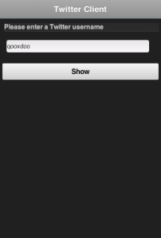
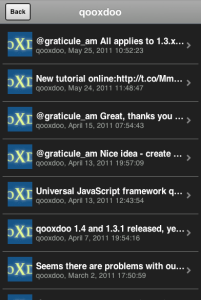

Tutorial: Creating a Twitter Client with qooxdoo mobile¶
In this tutorial you will learn how to create a simple Twitter client with the new qooxdoo mobile widgets. The client should display all tweets of a certain user. When a tweet is selected, the details of the tweet should be shown. You can find the tutorial code here.
Requirements + Getting Started¶
Please visit the getting started section, and follow the introduction, which describes how to create a qx.Mobile Application.
Creating your first Page¶
In this section we will create two pages, one page for entering the username whose tweets should be shown and another page for displaying the tweets.
But first of all we have to define what a page is:
A page is a widget which provides a screen with which users can interact in order to do something. Most times a page provides a single task or a group of related tasks. A qooxdoo mobile application is usually composed of one or more loosely bound pages. Typically there is one page that presents the “main” view.
Open the “mobiletweets” folder in your favorite IDE, so that you can edit all the files. Navigate to the “source/class/mobiletweets” folder, were all of the application class files are located. Now you are ready to create the application.
First we have to create a new page class. In order to do so, create a new folder “page” under “source/class/mobiletweets”, representing a new “namespace” mobiletweets.page. In this folder create a new JavaScript file named “Input.js”. This file will contain the “mobiletweets.page.Input” class. Define the class like this:
qx.Class.define("mobiletweets.page.Input",
{
extend : qx.ui.mobile.page.NavigationPage,
construct : function() {
this.base(arguments);
this.setTitle("Twitter Client");
}
});
The “Input” class inherits from qx.ui.mobile.page.NavigationPage, a specialized page that consists of a qx.ui.mobile.navigationbar.NavigationBar including a title, back and action buttons, and a scrollable content area. In the constructor of the class we set the title of the page to “Twitter Client”.
To show the “Input” page, we have to create an instance of the class and a page manager. The manager does the layouting and displays our page on screen. Additionally the manager gives us the possibility to use our application in a mobile or tablet device context. For our example, we just want to work in a mobile device context. That is why, we construct the manager with false.
After creation of manager, we have to add the “Input” page into the manager. Then we call show method of “Input” page, to display this page on start.
Open the “source/class/mobiletweets/Application.js” class file. You will find a comment in the main method "Below is your actual application code…" with example code below. As we don’t need this example code, we can safely replace it with the following lines of code:
var manager = new qx.ui.mobile.page.Manager(false);
var inputPage = new mobiletweets.page.Input();
manager.addDetail(inputPage);
inputPage.show();
As we have changed the dependencies of our application, recreate the source version by calling the generator “source” target as above.
Refresh the index.html in your browser. You will see a page with a navigation bar and a title “Twitter Client”. That is all you have to do when you want to display a page.
We need Data, lots of Data!¶
Ok, here we are. You have learned how to create two pages and to wire them by reacting on defined events. That is pretty cool, but without data to display our app is worthless. To display the tweets of a user we will use the public Tweet service of Twitter. Data binding is a powerful concept of qooxdoo which you can leverage off in your mobile applications as well. Extend the members section of the “Application” class by the following code:
__loadTweets : function() {
// Public Twitter Tweets API
var url = "http://twitter.com/statuses/user_timeline/" + this.getUsername() + ".json";
// Create a new JSONP store instance with the given url
var store = new qx.data.store.Jsonp(url);
// Use data binding to bind the "model" property of the store to the "tweets" property
store.bind("model", this, "tweets");
store.addListener("error", function(evt) {
// you can add error handling here, e.g. display a dialog or navigate back to the input page
}, this);
}
In the __loadTweets method we create a new JSONP store which will automatically retrieve the data from the given URL. By binding the model property to the tweets property, the tweets property will be automatically updated whenever the model property of the store is updated.
As you might have noticed the __loadTweets method uses two properties, username and tweets, that are not defined yet. We will define those properties now. Define a new section properties in the “Application” class and add the following two properties:
properties :
{
tweets :
{
check : "qx.data.Array",
nullable : true,
init : null,
event : "changeTweets",
apply : "_applyTweets" // just for logging the data
},
username :
{
check : "String",
nullable : false,
init : null,
event : "changeUsername",
apply : "_applyUsername" // this method is called when the username property is set
}
}
In the apply method _applyUsername of the username property we will call the __loadTweets method. So every time the username is set the tweets for this username are loaded. To see which data is set for the tweets property, we will print the data in the debugging console. To do so, we call this.debug with the stringified value in the apply method _applyTweets. Add the following code to the member section of the “Application” class:
// property apply
_applyUsername : function(value, old) {
this.__loadTweets();
},
_applyTweets : function(value, old) {
// print the loaded data in the console
this.debug("Tweets: ", qx.lang.Json.stringify(value));
}
Now the username has to be retrieved from the user input. To do so, we have to create an input form. The usage of the form classes should be familiar to you if you have used the RIA widget set before. Open the “Input” class again and place the following code, before the button instance in the _initialize method:
var title = new qx.ui.mobile.form.Title("Please enter a Twitter username");
this.getContent().add(title);
var form = this.__form = new qx.ui.mobile.form.Form();
var input = this.__input = new qx.ui.mobile.form.TextField();
input.setPlaceholder("Username");
input.setRequired(true);
form.add(input, "Username");
// Add the form to the content of the page, using the SinglePlaceholder to render
// the form.
this.getContent().add(new qx.ui.mobile.form.renderer.SinglePlaceholder(form));
First we add an instance of qx.ui.mobile.form.Title to the content of the page. To an instance of qx.ui.mobile.form.Form, a qx.ui.mobile.form.TextField instance input is added. Both instances are assigned to member variables as well, for further reuse. A text is set for the placeholder property of the textfield. By setting the property required to true we indicate that the textfield requires an input. Finally we add the form instance to the page content, by using a `` qx.ui.mobile.form.renderer.SinglePlaceholder`` renderer. The renderer is responsible for the look and feel of the form. In this case only the input fields with their placeholders are displayed.
In the _onTap method we have to retrieve now the value of the input field. Replace the code in the function body by the following code:
// validate the form
if (this.__form.validate()) {
var username = this.__input.getValue();
this.fireDataEvent("requestTweet", username);
}
After successfully validating the form, we retrieve the value of the textfield from the member variable and pass it as the data to the event.
As you surely remember we listen to the requestTweet event in the “Application” class. Open the Application class and add the following line to the event listener:
this.setUsername(evt.getData());
We’ve come full circle. By setting the username the data will be loaded and we can proceed to display the data. Rebuild the application and refresh it in the browser. Type in a valid twitter username (e.g. “qooxdoo”) and click the “Show” button. Press the F7 key to display the qooxdoo logging window or use the console of the browser developer tools. You will see the loaded tweets of the user.
Displaying the tweets¶
Now that we have the tweets for a certain user, it’s gonna be pretty easy to display them. All we need for that is a qx.ui.mobile.list.List and to set up some data binding. Lets proceed with the tutorial.
First we have to add the following _initialize method to the members section of the “Tweets” page.
members : {
__list : null,
_initialize : function() {
this.base(arguments);
// Create a new list instance
var list = this.__list = new qx.ui.mobile.list.List();
var dateFormat = new qx.util.format.DateFormat();
// Use a delegate to configure each single list item
list.setDelegate({
configureItem : function(item, value, row) {
// set the data of the model
item.setTitle(value.getText());
// we use the dataFormat instance to format the data value of the twitter API
item.setSubtitle(value.getUser().getName() + ", " + dateFormat.format(new Date(value.getCreated_at())));
item.setImage(value.getUser().getProfile_image_url());
// we have more data to display, show an arrow
item.setShowArrow(true);
}
});
// bind the "tweets" property to the "model" property of the list instance
this.bind("tweets", list, "model");
// add the list to the content of the page
this.getContent().add(list);
}
}
The created list instance (we store it in a member variable for further usage) will use a delegate to configure each single list item. The delegate is set by the setDelegate method as a literal object. The configureItem method is responsible for configuring the list items. It has three parameters:
- item: The list item renderer instance. Use this parameter to set the title, subtitle or icon of the list item.
- value: The value of the row. Entry of the model for the current row index.
- row: The row index.
In this case the list item renderer is the qx.ui.mobile.list.renderer.Default. This renderer has a title, subtitle and a image property, which can be set individually per row. In addition to those properties, the showArrow property shows an arrow on the left corner of the row, indicating that we have more data to display.
Finally the model of the list instance is bound to the tweets property, which we will add to the “Tweets” class right above the member section:
properties : {
tweets : {
check : "qx.data.Array",
nullable : true,
init : null,
event : "changeTweets"
}
}
There are only two tasks left:
- Bind the tweets property from the “Application” to the tweets property of the “Tweets” page instance.
- Bind the username property form the “Application” to the title property of the “Tweets” page instance.
Open the “Application” class file and add under the instantiation of the “Tweets” page tweetsPage the following code:
this.bind("tweets", tweetsPage, "tweets");
this.bind("username", tweetsPage, "title");
Generate the source code again and refresh you browser tab. Try the username “qooxdoo” and push the “Show” button. It is magic!
Details of a tweet¶
Great, you have made it so far! In the last section we will display a tweet on a new page when the user selects a certain tweet. Sometimes it can happen that a tweet is too long for a list entry. Ellipses are then shown at the end of the tweet. That is why we want to give the user a chance to display the whole tweet. Lets create a simple “Tweet” page that only shows a qx.ui.mobile.basic.Label with the selected tweet text. To do so, we bind the text property of the tweet to the label value property. Create the page, like you have done before, in the “source/class/mobiletweets/page” folder. The code of the page shouldn’t be something new for you:
qx.Class.define("mobiletweets.page.Tweet",
{
extend : qx.ui.mobile.page.NavigationPage,
construct : function() {
this.base(arguments);
this.set({
title : "Details",
showBackButton : true,
backButtonText : "Back"
});
},
properties:
{
tweet :
{
check : "Object",
nullable : true,
init : null,
event : "changeTweet"
}
},
members :
{
_initialize : function()
{
this.base(arguments);
// Create a new label instance
var label = new qx.ui.mobile.basic.Label();
this.getContent().add(label);
// bind the "tweet.getText" property to the "value" of the label
this.bind("tweet.text", label, "value");
}
}
});
Now create the instance of the “Tweet” page in the Application main method and return to the “Tweets” page, when the back listener is called.
var tweetPage = new mobiletweets.page.Tweet();
// Add page to manager
manager.addDetail(tweetPage);
// Return to the Tweets Page
tweetPage.addListener("back", function(evt) {
tweetsPage.show({reverse:true});
}, this);
Until now we will never see the “Tweet” page as its show method is never called. First we have to react in the “Tweets” page on a selection change event of the list, by registering the changeSelection event on the list in the _initialize method:
list.addListener("changeSelection", this.__onChangeSelection, this);
The __onChangeSelection method looks like this:
__onChangeSelection : function(evt)
{
// retrieve the index of the selected row
var index = evt.getData();
this.fireDataEvent("showTweet", index);
}
As you can see, a showTweet data event is fired here. This data event has to be defined in the events section of the “Tweets” class:
events : {
showTweet : "qx.event.type.Data"
}
All we need to do now is to listen to the showTweet event in the “Application” class main method, retrieve the index from the data event and to get the corresponding tweet from the data. Finally we show our “Tweet” page.
// Show the selected tweet
tweetsPage.addListener("showTweet", function(evt) {
var index = evt.getData();
tweetPage.setTweet(this.getTweets().getItem(index));
tweetPage.show();
}, this);
Rebuild the source code (or the ./generate.py build version), refresh the application in your browser and enjoy your application! We are done here.
Now you are ready to develop your own applications…¶
After you have finished this tutorial, you have learned the basics of qooxdoo mobile. You have seen how easy it is to develop qooxdoo mobile applications when you are familiar with qooxdoo. There are only some new concepts (e.g. Pages) to learn and you are good to go. All qooxdoo mobile applications work on Android and iOS devices.